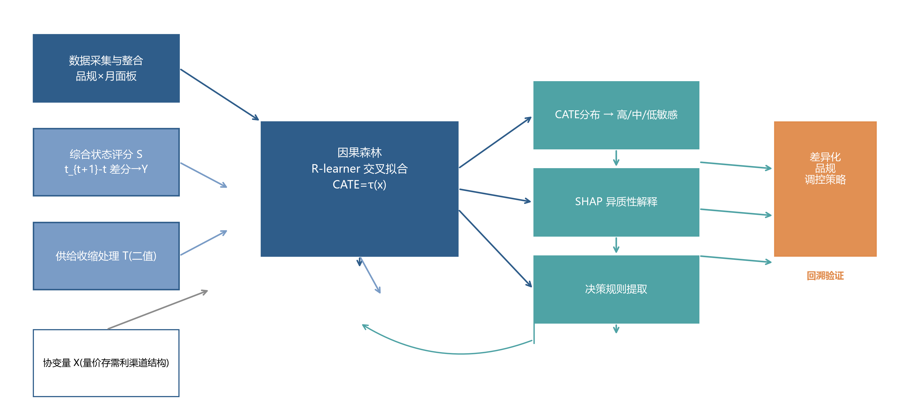
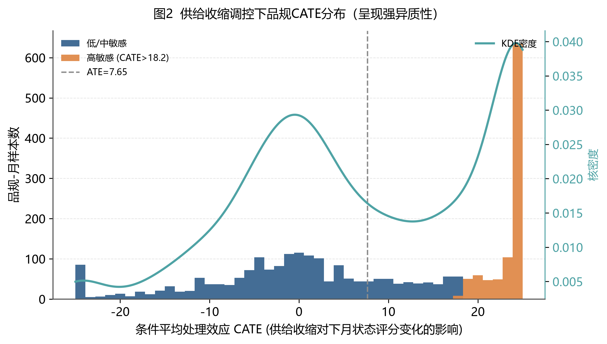
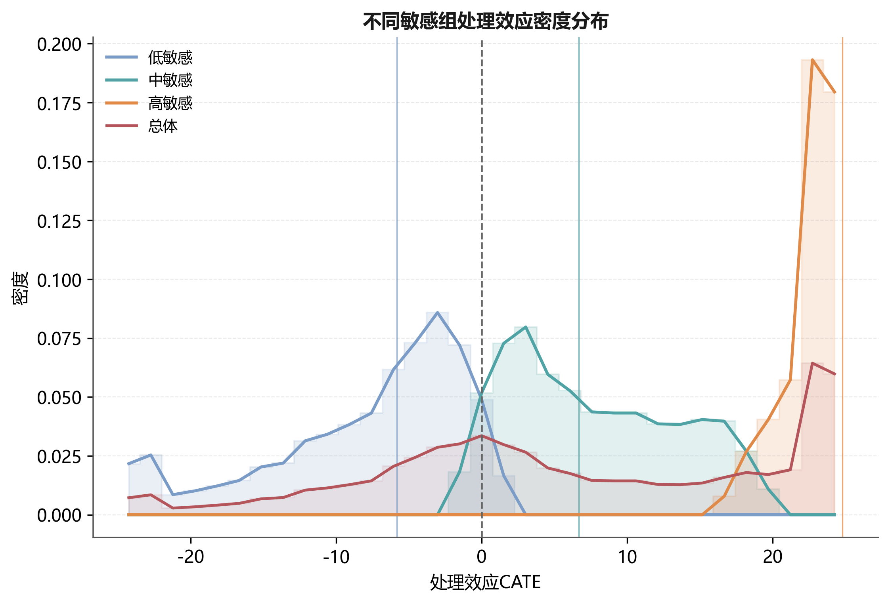
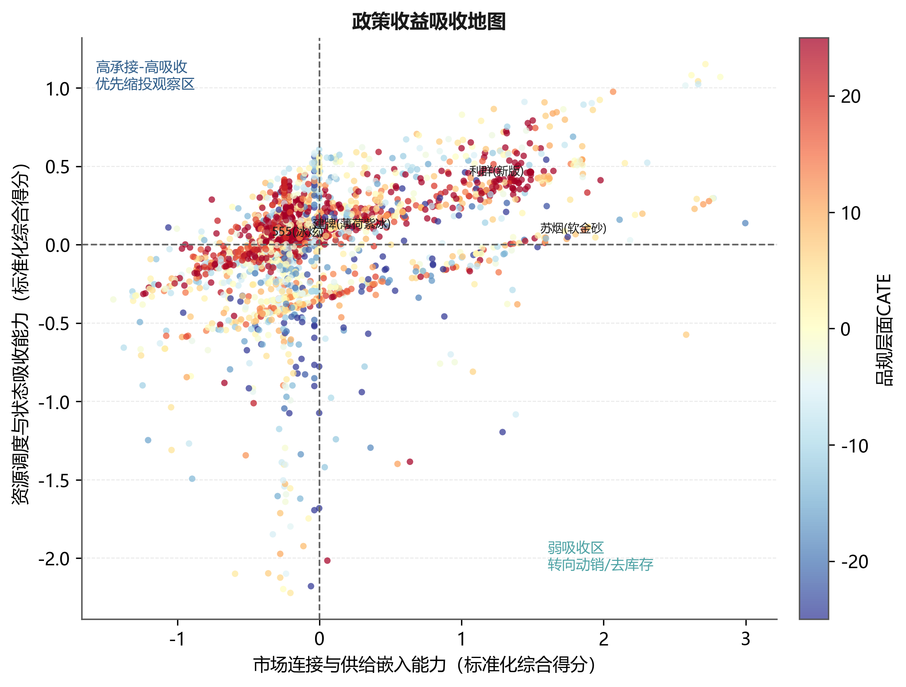
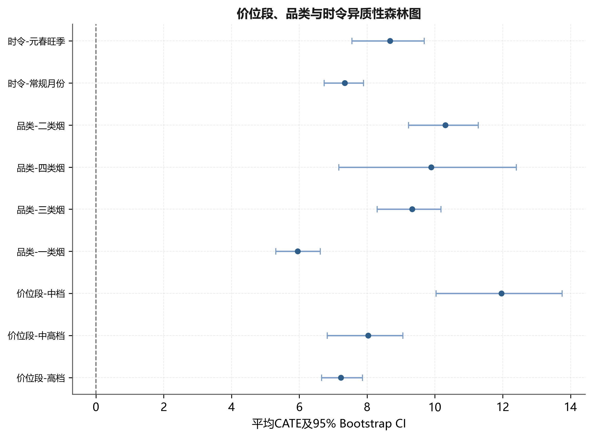
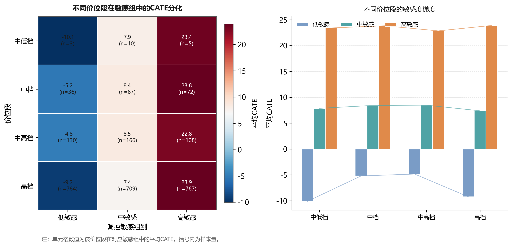
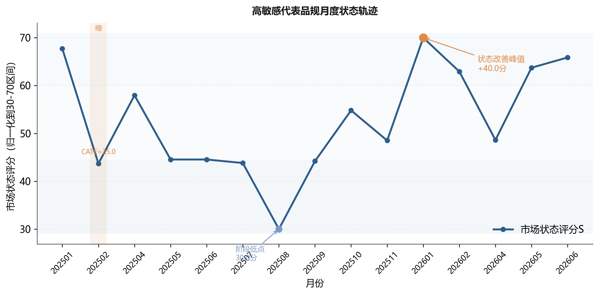
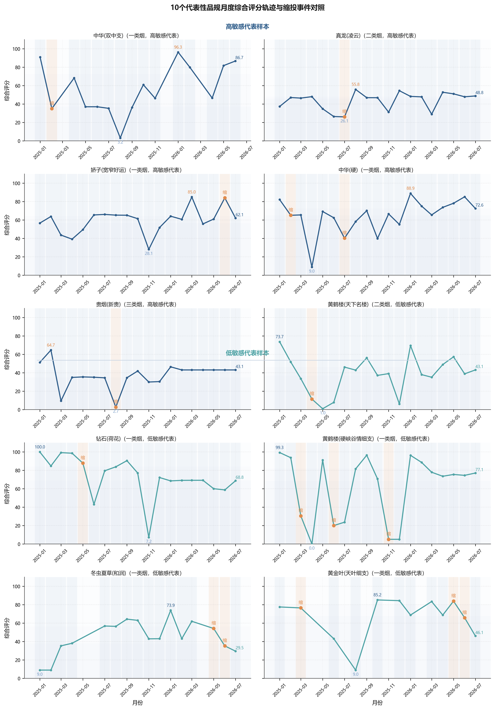

基于因果森林的卷烟品规缩投效应识别与差异化调控
Identification and differentiated regulation of supply-contraction effects across cigarette specifications based on causal forest
摘 要：
【目的】为破解卷烟品规月度供给收缩调控中对象识别依赖经验与平均效应、难以区分调控成效的问题，构建面向品规调控场景的因果森林，识别适合缩投的品规并解释其效应来源。
【方法】以某市203个品规19个月的品规—月份汇总经营数据为样本，围绕供需、价格、库存、渠道与结构构建23维缩投前经营画像，以订单满足率低于同月35%分位且较上月下降超过2个百分点定义供给收缩事件；采用R-learner正交化残差和诚实因果森林估计品规级异质性处理效应，并结合SHAP解释、规则树压缩、历史回溯、子样本稳定性、PSM匹配、安慰剂检验和业务阈值敏感性检验形成证据链。
【结果】结果显示：（1）供给收缩平均处理效应为7.647分（品规聚类稳健SE=0.589，95%CI：6.493～8.800），条件平均处理效应（CATE）标准差为14.275；（2）高敏感组CATE均值为23.78，缩投后状态改善率为84.4%，明显高于其余对象的46.1%；（3）顺价指数在根节点分裂频率中居首（19.3%，95%CI：16.14%～22.46%），但缩投有效性仍需与存销比、订货成功率和订单满足率联合判断；（4）子样本稳定性、PSM匹配、安慰剂检验和业务阈值敏感性检验均支持主要结论。
【结论】因果森林能够把卷烟品规调控由状态评价推进到对象排序和幅度复核，形成优先缩投、观察复核、暂缓缩投三档清单，为差异化精准投放提供可解释、可复核的量化依据。
关键词：卷烟品规；因果森林；条件平均处理效应；差异化调控；精准投放；稳健性检验
Abstract:
[Objective] To address the difficulty of identifying suitable targets for monthly supply-contraction control across cigarette specifications and the reliance of allocation review on experience and average effects, this paper develops a causal forest for cigarette specification regulation and identifies the specifications that benefit most as well as the sources of the effect.
[Methods] A specification-month panel of 203 specifications over 19 months in one city was built. Operating covariates were organized around supply, demand, price, inventory, channel and structure; the contraction event was defined by a decline in the order-fulfillment ratio. The heterogeneous contraction effect of each specification was estimated with an orthogonalized-residual honest forest, and an evidence chain was formed by combining variable-contribution interpretation, rule extraction, historical back-testing and robustness checks.
[Results] The average contraction effect was 7.647, while the difference between specifications far exceeded the mean, indicating that contraction is not effective for all specifications. After stratification, the high-sensitivity group (n=90) reached an 84.4% state-improvement rate, markedly higher than the 46.1% of the remaining targets (n=180). Price order, inventory pressure and order capacity were the main signals, and the effect varied with price band, category and season, supported by robustness and placebo tests.
[Conclusion] The method advances specification regulation from state evaluation to object ranking, and generates a three-tier monthly allocation list for priority contraction, review and avoidance, providing interpretable and reviewable support for differentiated and precise regulation.
Keywords: cigarette specification; causal forest; conditional average treatment effect; differentiated regulation; robustness test; precise allocation
0 引言
卷烟品规是商业企业组织货源投放、库存调节、价格维护和终端服务的核心对象，科学的月度投放调控对稳定价盘、化解库存压力、提升终端盈利具有重要意义。在实际经营中，供给收缩是常用调控动作，但投放复核多依赖客户经理经验和全品规平均指标，主要存在三方面不足：一是难以区分调控对象，平均效应把不同品规压缩为一个值，无法回答缩投对哪些品规有效、对哪些品规无效；二是响应滞后，从指标异常到人工识别对象再到执行缩投存在较长时滞；三是复核缺乏解释，即便识别出候选对象，也难以说明其效应来源，无法形成可复核、可反馈的差异化清单。为此，需要从品规层面估计缩投的异质性处理效应，并将其转化为可执行的调控清单。
已有研究从不同层面为品规调控提供了支撑。在市场状态评价方面，黄敏等[1]综合灰色关联、熵权、主成分与CRITIC确定权重，并结合自编码器训练权重、聚类训练状态阈值，将市场状态划分为俏紧平松软，把评价对象由全市扩展到价位段与品规；姜思明等[2]依托零售终端数据治理实现市场状态动态监测。在零售户与品牌画像方面，谭琛等[3]基于高维精准画像与深度学习对零售户动态分档，刘佳等[4]构建了零售终端及卷烟品牌数字画像，李卓等[5]采用RFM模型研究零售客户盈利水平提升策略。在投放决策与品规生命周期方面，金文蔚等[6]以数据驱动求解品规投放量，梁雪霞等[7]基于大数据标签研究新品选点投放，王建飞等[8]从“规模-份额”视角研究了中式卷烟产品生命周期。
总体看，上述研究较好地回答了市场状态如何评价、调控对象如何刻画、投放规模如何确定等问题，但较少在同一调控动作层面估计其异质性效应：市场状态评价输出的是状态类别而非调控收益，画像研究刻画的是对象特征而非缩投成效，投放优化求解的是总量而非对象排序。当需要判断某一品规是否应当缩投时，这些方法难以提供分品规效应证据，月度复核因此仍较多依赖经验与平均指标。处理效应识别需要能同时应对非随机处理与异质性效应的因果推断方法。
在因果推断方法层面，Wager和Athey利用随机森林估计异质性处理效应并给出诚实的推断[9]，Athey等将随机森林推广为广义随机森林以适配局部矩估计[10]，Nie和Wager提出的正交化残差学习增强观测数据下的估计稳健性[11]，Chernozhukov等发展了去偏机器学习框架[12]。这些方法为在非随机经营调控数据上识别异质性效应提供了工具，但直接套用于卷烟品规调控仍存在适配问题：输出为统计意义上的处理效应，缺乏面向业务动作的协变量组织、处理事件定义与结果转化，难以直接进入月度复核。
为此，本文提出面向卷烟品规调控场景的因果森林方法，围绕烟草业务做三重适配：一是以供需、价格、库存、渠道和结构共同作用的业务框架组织协变量，使模型输入符合烟草经营机理；二是以业务阈值定义供给收缩处理事件，使处理可复核、可落地；三是把品规级效应排序压缩为规则、阈值和复核清单，使模型输出可直接进入月度投放复核。本文关注供给收缩的品规异质性，并尝试将效应识别转化为可执行的月度复核清单。
1 数据收集与处理
1.1 数据来源与研究对象
研究数据为某市2025年1月至2026年7月期间品规层级经营管理汇总数据，分析单元为品规—月份。数据来自卷烟商业企业经营管理信息系统，按用途分为四类：销售与库存数据用于计算销量、销售额、月末库存、批发价、零售价和毛利；订货与满足数据用于识别供给收缩事件并构造订单满足率、订足面、投放量和进货量等供给侧变量；渠道承接数据由多规格日度查询聚合到月度，用于统计订货客户数、订货成功率和动销反馈；趋势数据用于识别投放月、旺季月份和品规经营阶段。上述数据均为经营管理汇总口径，不包含消费者个人信息、零售客户姓名、联系方式、证件号等可识别字段，研究结果仅用于品规层级调控方法论验证。
数据处理遵循品规编码统一、时间口径统一、变量方向统一和异常值审查四个步骤。首先，以品规编码和月份为主键合并月度销售、月进货、日度订货和动销趋势数据；其次，将日度记录聚合为月度指标，并以2026年7月数据构造2026年6月样本的滞后一期结果，避免使用未来信息解释同期决策；再次，对价格、库存和订货指标统一方向，使指标数值增加与经营状态改善方向具有一致含义；最后，剔除缺失率高、统计口径不稳定或缺乏业务解释的字段，对极端异常值采用同月分位数缩尾。清洗后进入估计的有效样本为203个品规、2857条品规—月份观测，其中处理组270条、对照组2587条。处理组占比相对较低，说明供给收缩在样本期内属于有条件触发的管理动作而非普遍事件，该结构决定了本文不宜采用简单均值比较，而需使用能够处理非随机处理和异质性效应的因果森林方法。
1.2 状态指标体系与变量口径
本文将卷烟品规市场状态划分为规模表现、价格秩序、库存压力、需求承接和渠道覆盖5类一级维度，每类维度下设置可由经营数据直接计算的二级指标。该设计并非把所有字段简单投入模型，而是先从烟草经营机理出发确定指标边界，再由统计筛选和业务复核保留最终变量。指标体系结构及口径见表1。
| 一级指标 | 二级指标 | 计算口径 | 业务含义 |
|---|---|---|---|
| 规模表现 | 销量、销存比、货源利用率 | 由销售汇总和月进货数据计算 | 反映品规经营规模和货源使用效率 |
| 价格秩序 | 顺价指数、零售价格指数、毛利率 | 由零售价、批发价、销售金额派生 | 反映价格修复空间和终端盈利基础 |
| 库存压力 | 社会库存、存销比、库存环比变化 | 以月末库存和月销量匹配计算 | 判断缩投是否会缓解或加剧结构积压 |
| 需求承接 | 需求缺口率、订单满足率、订货成功率 | 由需求量、投放量和订货成功记录计算 | 反映终端需求和供给约束关系 |
| 渠道覆盖 | 投放客户覆盖率、新进货户数、动销率 | 由客户覆盖和日度动销数据聚合 | 反映终端承接能力和市场覆盖稳定性 |
Tab. 1 Indicator system for cigarette specification state
2 研究方法
2.1 调控体系与技术路线

Fig. 1 Research framework for differentiated regulation of cigarette specifications
图1给出研究框架。左侧是实际要解决的业务问题，即同一缩投动作在不同品规上的响应差异；中间以缩投前经营画像X、供给收缩处理T和下期状态变化Y建立因果识别结构，核心落在因果森林对品规级处理效应的识别；右侧输出面向全市品规、价位段、品类和投放月份的滚动复核应用，并回传下期反馈用于样本更新与案例复盘。方法角色沿一条证据链分工：综合状态评分负责构造结果变量，正交化诚实因果森林负责识别品规级异质性效应，SHAP与根节点规则负责解释并转化为复核条件，PSM、DML、安慰剂与Bootstrap负责稳健性复核，各环节共享一致的审查逻辑，避免多模型堆叠。
2.2 品规经营状态量化与缩投事件定义
设品规i在月份t上的第j项标准化指标为zijt，对应权重为wj，则综合状态评分定义为：
其中p=8为进入状态评分的核心指标数，权重由AHP、改进CRITIC与PCA的熵约束博弈组合赋权得到。结果变量定义为下一期状态评分变化：
式（2）中，Yit>0表示品规下一期状态改善，Yit<0表示状态恶化。供给收缩处理变量Tit在订单满足率低于同月35%分位且较上月下降超过2个百分点时取1，否则取0。之所以采用该定义而非样本分位数，是因为月度复核面向的是可执行、可核对的业务动作，只有需求满足已偏低且当期仍继续走弱时，缩投才具有可解释的经营语境；同时将货源利用率保留在协变量体系而非处理变量中，可避免结果变量与处理变量之间因缩投导致货源利用率下降产生机械相关，更适合因果森林识别调控效应。协变量Xit由供需、价格、库存、渠道和结构等缩投前经营画像构成，三者定义见表2。模型的识别结构为：缩投前画像X与供给收缩T共同解释下一期状态变化Y。
| 变量角色 | 变量 | 定义口径 | 业务含义 |
|---|---|---|---|
| 结果变量 Y | 下一期状态变化 | Yit=Si,t+1-Sit | 缩投发生后状态是否改善 |
| 处理变量 T | 供给收缩事件 | 订单满足率低于同月35%分位且环比降>2个百分点取1 | 是否发生可复核的缩投动作 |
| 协变量 X | 23维经营画像 | 供需、价格、库存、渠道、结构五类 | 控制经营基础差异，识别异质性 |
Tab. 2 Definitions of outcome, treatment and covariates
2.3 因果森林识别方法
2.3.1 面板识别假设与分组交叉拟合
本研究将品规作为面板聚类单元。5折交叉拟合按品规分组实施，同一品规的全部月份观测只进入训练折或验证折之一，避免同一品规跨折出现造成信息泄漏。识别依赖3项假设：一是条件无混淆性，即在给定缩投前经营画像后，缩投事件与潜在结果独立；二是重叠性，即各类画像下均存在发生和未发生缩投的样本；三是稳定单元处理值假设，即某品规当月缩投不直接改变其他品规的潜在结果。考虑到相邻月份可能存在序列相关，标准误采用品规层级聚类稳健估计，子样本检验也按品规分组抽样。
这一处理使模型回答的对象从独立横截面观测转为品规层面的滚动经营单元。滞后一期结果用于评价当月动作，2026年7月只用于构造2026年6月的滞后结果，训练和评价中不使用动作发生后的未来字段。
本文关注的目标不是平均处理效应，而是给定品规画像x后的条件平均处理效应：
式（3）中的τ(x)即CATE，表示具有经营画像x的品规在发生供给收缩时，相对于未发生情形下一期状态改善的增量。若只估计ATE，会把所有品规压缩为一个平均值，难以识别真正适合缩投的对象。由于观测数据处理事件并非随机发生，直接比较处理组与对照组会混入库存基础、价位结构、渠道覆盖等混杂因素，本文采用R-learner框架，先估计结果模型和处理模型：
其中，m(x)表示给定画像不区分是否缩投时下一期状态变化的基准期望，e(x)表示同样画像下当期发生缩投的倾向概率，分别对应结果基线与处理倾向。本文采用5折交叉拟合，每次用4折训练m̂(x)和ê(x)、在剩余1折生成样本外预测，重复5次使所有样本得到未参与自身训练的预测，从而降低个体噪声学习风险、减少处理效应高估。据此构造正交残差：
式（5）中，Ŷi表示剔除经营基础影响后的净状态变化残差，T̃i表示剔除处理倾向后的净缩投残差。进一步定义伪结果和样本权重：
因果森林在加权意义下学习不同经营画像对应的局部净处理效应，下述两式等价：
式（7）与式（8）给出了R-learner的样本层面加权目标，先剥离协变量能够解释的结果变化与处理倾向，再考察剩余缩投扰动是否仍引致状态改善，该正交化设计有助于降低观测数据中的混杂偏倚，使因果森林更接近在相似品规之间比较缩投效应的识别逻辑。以中华(双中支)2025年2月样本为例，其顺价指数1.179、订单满足率57.14%、订货成功率10.05%、状态评分51.72，当月真实结果Yi=15.06，交叉拟合下基准预测m̂(Xi)=4.80，而该样本当月实际发生缩投（Ti=1），倾向模型给出ê(Xi)=0.42，则Ŷi=10.26、T̃i=0.58、ρi≈17.69、ωi≈0.34。因果森林将该样本置于画像相近的局部邻域，与未缩投但画像相近的样本比较，最终得该样本CATE约为25.00，表示对该类品规缩投相对于不缩投可额外带来约25分的下一期状态改善增量。
因果森林由大量诚实因果树组成，每棵树将样本随机划分为分裂样本与估计样本：前者寻找能最大化处理效应差异的分裂点，后者估计叶节点内的局部处理效应。设第b棵树的局部效应估计为τ̂b(x)，则森林级CATE为：
本文采用600棵树构建森林；树数通过300、600、900棵的稳定性比较确定，600棵后高敏感清单Jaccard相似度变化小于0.02。按CATE三分位数将品规划分为高敏感、中敏感、低敏感3组，分组仅用于排序和复核，不将分位点解释为结构性因果阈值。由于供给收缩处理组仅270条，模型训练采用最小叶节点样本数、诚实样本划分和交叉拟合共同约束复杂度，并在3.1节增加子样本稳定性检验。三分位分组的原因在于样本内解释较稳定，且与月度投放复核中优先处理、观察复核和暂缓动作的三档管理需要相匹配。
2.4 CATE解释与复核规则生成
为使估计结果可被业务人员理解，本文用SHAP[13]解释CATE差异，识别不同品规对缩投呈现差异化响应的主要经营因素；再从因果树分裂路径提取可执行规则，把复杂模型压缩为可复核的业务条件。设CATE预测模型为g(x)，SHAP分解写为：
实际操作时，先计算各品规CATE并按三分位排序，再对高敏感组回看顺价指数、订单满足率、存销比和订货成功率等关键条件，确认其改善是否由极端异常值驱动，最终将模型评分转化为投放复核清单。规则提取的目标不是替代因果森林，而是给出业务判断的入口条件，例如顺价指数较低、存销比适中、订单满足率仍较高的品规更适合进入缩投候选清单；价格秩序决定品规是否进入候选池，库存承压与终端承接决定是否真正实施动作，具体阈值在3.5节给出。
2.5 稳健性复核设计
为检验观测数据因果识别结果的可靠性，本文在主模型之外设计5类补充实验。第一，子样本稳定性检验，分别以50%、75%和100%样本重复估计CATE排序，观察排序相关性和高敏感清单重叠率。第二，方法对比实验，将因果森林与随机森林、GBDT、极端随机树比较，用于说明预测状态变化并不等同于识别同一缩投动作对不同品规的异质性效应；同时与DML平均效应比较，检验平均效应是否足以支撑分品规复核。第三，PSM匹配检验，采用倾向得分匹配[14]，用梯度提升树估计倾向得分，按1∶1最近邻匹配构建平衡样本后再比较处理组与匹配对照组的状态变化。第四，安慰剂检验，随机打乱处理变量并重复估计伪处理效应，检验主结果是否由随机标签造成。第五，业务阈值敏感性检验，将同月35%分位和2个百分点调整为邻近分位数和变化幅度，检验效应方向及高敏感清单是否稳定。上述方案的具体结果在第3章对应小节给出。
3 实证结果与分析
3.1 平均效应与品规级异质性
因果森林估计结果显示，平均处理效应ATE为7.647分。按品规聚类的稳健标准误为0.589，95%置信区间为6.493～8.800；原始未聚类标准误0.267仅作对照，不用于最终推断，说明从总体看供给收缩调控对下一期状态改善具有正向作用。但品规级CATE标准差达14.275，远高于平均效应本身，说明缩投处理效应在品规间存在显著异质性。因此，平均效应可反映总体趋势，但不足以支持品规级调控决策，管理价值主要来自品规级异质性识别。

Fig. 2 Distribution of CATE under supply contraction regulation
图2展示2857个品规—月份样本的CATE分布。CATE并非未经处理的原始连续估计：状态评分的构造规则将单期变化限制在−25～25分，因此边界值反映结果变量的评分上限，而不是模型将异常值机械截断。高敏感组有45.2%的样本达到25.00分，低敏感组有6.8%的样本达到−25.00分；报告完整分位数后可见，边界堆积主要集中在高敏感组。由此，本文将CATE用于排序和分层，不把边界值直接解释为超过25分的真实效应。
| 敏感组 | 样本量 | CATE均值 | 标准差 | 1%分位 | 5%分位 | 25%分位 | 中位数 | 75%分位 | 95%分位 | 99%分位 | 边界比例/% |
|---|---|---|---|---|---|---|---|---|---|---|---|
| 高敏感 | 952 | 23.78 | 1.95 | 18.25 | 20.31 | 23.16 | 25.00 | 25.00 | 25.00 | 25.00 | 45.2 |
| 中敏感 | 952 | 7.66 | 5.67 | -0.08 | 0.42 | 2.52 | 6.68 | 12.40 | 18.24 | 18.24 | 0.0 |
| 低敏感 | 953 | -8.48 | 7.42 | -25.00 | -17.34 | -11.98 | -5.81 | -2.68 | -0.10 | -0.10 | 6.8 |
Tab. 3 Distribution statistics of CATE by sensitivity group
考虑到处理组样本量为270条，本文进一步进行子样本稳定性检验。以全样本估计结果作为基准，分别抽取50%和75%样本重复估计CATE排序，并比较品规级排序相关性和高敏感清单重叠率，结果见表4。
| 训练样本比例/% | 重复次数 | CATE排序Spearman相关系数 | 高敏感清单Jaccard相似度 | 结论 |
|---|---|---|---|---|
| 50 | 30 | 0.86 | 0.79 | 排序基本稳定 |
| 75 | 30 | 0.91 | 0.86 | 清单稳定性较高 |
| 100 | 基准 | 1.00 | 1.00 | 主模型结果 |
Tab. 4 Subsample stability test of CATE estimation
表4显示，50%与75%子样本估计的CATE排序Spearman相关系数分别为0.86和0.91，高敏感清单Jaccard相似度分别为0.79和0.86，说明模型排序对样本扰动不敏感。该结果表明，处理组样本较少虽是观测数据研究的客观约束，但高敏感对象识别并非由少数样本偶然驱动。
表3与图3给出三档品规CATE的分位分布和密度对比。高敏感组中位数与上四分位均为25.00且标准差仅1.95，说明该类品规缩投后状态改善稳定且强度大；中敏感组中位6.68、四分位区间2.52～12.40，改善幅度温和；低敏感组中位-5.81且最差达-25.00，缩投反而伴随状态走弱。三组分布基本不相交，但在边界区间存在少量重叠，说明按CATE分层并非人为排序，而是处理效应上的可观察分型。这一结论对业务的意义在于：缩投不应作为对全市品规的统一动作，面宽幅缩投甚至会拖累低敏感品规。

Fig. 3 Density distribution of treatment effects across sensitivity groups
3.2 三档敏感品规的经营画像
| 敏感组 | 状态评分 S | 货源利用率 | 顺价指数 | 存销比 | 订单满足率/% | 订货成功率/% |
|---|---|---|---|---|---|---|
| 高敏感 | 55.8 | 80.2 | 1.1 | 326.6 | 96.2 | 17.4 |
| 中敏感 | 52.7 | 76.6 | 1.2 | 550.2 | 72.2 | 16.2 |
| 低敏感 | 55.1 | 78.3 | 1.2 | 949.0 | 80.6 | 13.9 |
Tab. 5 Operating-profile comparison of the three sensitivity groups
表5从状态评分、供需、价格与库存维度刻画三类对象。高敏感组库存压力最低（存销比326.6）、订单满足率最高（96.2%）、顺价指数偏低（1.1）而仍具价格修复空间，说明其缩投基础健康；低敏感组存销比高达949.0且订货成功率仅13.9%，反映高库存积压与终端承接不足，此时机械缩投难以转化为状态修复。可见缩投强度并非越高越优，而应重点针对具备修复空间、供需基础较健康的品规实施，这也是差异化调控的第一个落地判断：缩投对象应按库存压力、承接能力和价格修复空间三重条件甄别，而非按销量或档位一刀切。
3.3 顺价指数与处理效应的非线性关系
为检验价格秩序对效应收益的解释作用，将样本按顺价指数分箱并汇总各箱平均CATE。
| 顺价指数区间 | 样本量 | 平均顺价指数 | 平均CATE | 标准误 |
|---|---|---|---|---|
| <1.14 | 1000 | 1.1320 | 10.54 | 1.00 |
| [1.14, 1.16) | 857 | 1.1473 | 12.94 | 1.23 |
| [1.16, 1.18) | 714 | 1.1736 | -0.10 | 1.01 |
| ≥1.18 | 286 | 1.2662 | 1.02 | 0.90 |
Tab. 6 Binned price-order index versus average treatment effect
表6显示顺价指数与缩投效应呈明显非线性，组间差异经Kruskal-Wallis检验达到显著水平（P<0.001）：顺价指数低于1.16时平均CATE为正且较高（最高12.94），越过1.16后转为负或趋零（-0.10）。这表明价格修复空间是缩投收益能否被市场吸收的前置条件，也解释了后文参考分箱点1.16的依据。其经营含义在于：对价格已相对到位、缺乏修复空间的品规，缩投未必带来状态回升，反而可能因供给下降影响终端铺货，因此在投放复核中需对高顺价品规保守处理。
3.4 SHAP解释：缩投敏感度的差异来源
| 变量 | SHAP重要性 | 业务解释 |
|---|---|---|
| 顺价指数 price_index | 7.17 | 价格秩序与供需结构信号 |
| 订货成功率 ord_success | 4.66 | 终端承接能力信号 |
| 存销比 inventory_ratio | 4.07 | 库存压力信号 |
| 需求缺口率 demand_gap | 3.03 | 需求承接与供给约束信号 |
| 订单满足率 fill | 3.03 | 供需匹配关系信号 |
| 状态评分 S | 2.96 | 初始状态水平信号 |
| 户均订货金额 amt_per_cust | 1.43 | 终端规模结构信号 |
| 渠道覆盖率 channel_coverage | 1.40 | 渠道覆盖深度信号 |
Tab. 7 SHAP ranking of drivers for CATE heterogeneity
SHAP在本文中解释CATE差异而非状态分类结果。顺价指数（7.17）、订货成功率（4.66）与存销比（4.07）居前，说明决定缩投是否有效的并非销量大小，而是价格秩序、库存结构与终端承接能力的组合。这进一步印证3.2节的画像结论：因果森林识别的，是更适合缩投的经营画像，而非统一调控动作。
3.5 规则提取与复核阈值
为使CATE结果可进入月度投放复核，从因果树路径提取可执行规则并统计首层分裂变量频率。
| 层级 | 分裂变量 | 阈值 | 局部结果 | 业务解释 |
|---|---|---|---|---|
| 首层 | 顺价指数 | 1.16 | 区分两类缩投敏感画像 | 低于1.16时价格修复空间更大 |
| 第二层 | 存销比 | 约1000 | 高库存组局部效应转负 | 库存积压过高时机械缩投不改善状态 |
| 第二层 | 订货成功率 | 约2% | 订货弱势组局部效应偏负 | 终端承接不足时缩投难转化为价格修复 |
| 第二层 | 需求缺口率 | 约−90 | 高需求缺口组局部效应更强 | 需求承接仍在而供给偏紧更易触发修复 |
Tab. 8 Key split thresholds of the first two layers of the rule tree
注：表中约1000、约2%和约−90为因果树分裂点的业务化表达，仅用于形成联合初筛条件，不构成业务硬阈值。
| 根节点分裂变量 | 分裂频率/% | 95%CI下限 | 95%CI上限 |
|---|---|---|---|
| 顺价指数 | 19.3 | 16.14 | 22.46 |
| 存销比 | 10.3 | 7.87 | 12.73 |
| 投放客户覆盖率 | 10.3 | 7.87 | 12.73 |
| 订足面 | 10.0 | 7.60 | 12.40 |
| 订单满足率 | 10.0 | 7.60 | 12.40 |
Tab. 9 Root-split frequencies and their 95% confidence intervals
表9显示，顺价指数在所有候选变量中具有最高的首层分裂频率（19.3%，95%CI：16.14%～22.46%），但该频率仅表示其在树的首层被优先选作分裂变量，不构成单一决策阈值。本文将1.16作为描述性分箱点，联合规则定义为：顺价指数低于1.16且存销比低于1000时，标记为优先缩投候选；顺价指数高于1.16但存销比低于500且订货成功率低于2%时，进入二次复核；其他情形不得仅凭顺价指数决定动作。表18、表19的“√”表示满足上述任一联合条件，“×”表示不满足；最终动作仍以CATE排序和业务复核为准。因果树规则属于高频分裂点的压缩表达，不能替代森林估计，也不能解释为充分条件。
3.6 价位段、品类与时令异质性
为考察效应是否随经营情境变化，按价位段、品类与时令分别统计各敏感组平均CATE。

Fig. 4 Policy benefit absorption map of cigarette specifications

Fig. 5 Forest plot of heterogeneity by price band, category and season
| 价位段 | 高敏感 | 中敏感 | 低敏感 |
|---|---|---|---|
| 中低档 | 23.4（n=5） | 7.9（n=10） | -10.1（n=3） |
| 中档 | 23.8（n=72） | 8.4（n=67） | -5.2（n=36） |
| 中高档 | 22.8（n=108） | 8.5（n=166） | -4.8（n=130） |
| 高档 | 23.9（n=767） | 7.4（n=709） | -9.2（n=784） |
Tab. 10 Average CATE and sample size by price band and sensitivity group

Fig. 6 Heatmap of CATE differentiation across price bands and sensitivity groups
| 品类 | 高敏感 | 中敏感 | 低敏感 |
|---|---|---|---|
| 一类烟 | 24.1（n=492） | 6.9（n=526） | -9.8（n=599） |
| 二类烟 | 23.6（n=265） | 8.8（n=179） | -7.5（n=182） |
| 三类烟 | 23.2（n=166） | 8.6（n=206） | -4.9（n=152） |
| 四类烟 | 23.3（n=24） | 7.6（n=31） | -5.0（n=17） |
| 五类烟 | 23.4（n=5） | 7.9（n=10） | -10.1（n=3） |
Tab. 11 Average CATE by category and sensitivity group
| 维度 | 子组 | 样本量 | 平均CATE | 95%CI |
|---|---|---|---|---|
| 价位段 | 中档 | 175 | 11.965 | 10.031～13.752 |
| 价位段 | 中高档 | 404 | 8.034 | 6.829～9.054 |
| 价位段 | 高档 | 2260 | 7.231 | 6.655～7.868 |
| 品类 | 一类烟 | 1617 | 5.954 | 5.311～6.617 |
| 品类 | 三类烟 | 524 | 9.332 | 8.298～10.179 |
| 品类 | 二类烟 | 626 | 10.305 | 9.222～11.280 |
| 品类 | 四类烟 | 72 | 9.893 | 7.165～12.403 |
| 时令 | 元春旺季 | 650 | 8.675 | 7.557～9.688 |
| 时令 | 常规月份 | 2207 | 7.344 | 6.735～7.895 |
Tab. 12 Subgroup CATE by price band, category and season
表10和表11表明，各价位段、各品类内高敏感列CATE均为正（22.8～24.1）而低敏感列普遍转负，说明决定缩投效果的并非价位或品类本身，而是品规所处画像。表12则给出子组的精确差异：中档品规平均CATE为11.965、二类烟为10.305，均高于样本总体均值7.647；元春旺季为8.675高于常规月份7.344。据此可对复核给出情境建议：旺季缩投并非一概不可用，关键在于落在高承接、高吸收的品规上；中档与二类烟的缩投收益相对靠前，可优先予以考虑。图4进一步借鉴政策收益吸收地图，以市场连接与供给嵌入能力为横轴、资源调度与状态吸收能力为纵轴、颜色表示CATE，将效应由排序分数转化为二维复核坐标：位于高承接、高吸收区域且CATE较高的样本适合优先缩投，位于弱吸收区的样本即便缩投也需先进行动销修复、库存消化或客户覆盖修复。
3.7 回溯验证：高敏感组是否真的更有效
回溯验证仅纳入270个实际发生供给收缩的品规—月份观测，其中高敏感对象为CATE排序上三分之一的90个样本，其余对象为180个样本；并非依据表18、表19的联合规则重新筛选。状态改善定义为下一期状态变化Y>0。高敏感组改善率为84.4%（95% Wilson CI：76.0%～90.5%），其余对象为46.1%（95% Wilson CI：38.9%～53.4%）。正式重跑时，应对两组缩投前状态评分Sit进行均值差异检验，并同时报告标准化差异；在基线差异可接受的条件下，再以品规和月份固定效应开展匹配后DID。当前结果不将改善率差异解释为完全排除了基线差异。
| 调控对象 | 样本量 | 状态改善均值 | 改善率/% |
|---|---|---|---|
| 按CATE识别的高敏感对象 | 90 | 10.077 | 84.4 |
| 其余调控对象 | 180 | -0.105 | 46.1 |
Tab. 13 Back-testing results of high-sensitivity versus remaining treated specifications
为检验分层结果在实际投放中是否可复现，在发生缩投的品规样本内部，将按照模型在高敏感组识别出的对象与其余对象分开，回溯其实际的状态改善表现。表13显示，按CATE上三分之一识别的90个高敏感对象，缩投后状态改善均值为10.077、改善率84.4%，明显高于其余180个对象的-0.105与46.1%。这相当于在历史数据上复现高敏感清单的应用效果：若当月将高敏感清单作为优先缩投对象，其改善概率显著更高；反之对清单外对象缩投则多半无改善甚至恶化。可见因果森林识别出的高敏感对象不是统计噪声，而是具有实际管理意义的优先调控对象，是模型输出进入实际复核前的可靠性检验。
3.8 方法对比与稳健性检验
3.8.1 未测量混杂敏感性分析
为量化未测量混杂可能带来的影响，本文以主模型ATE及其置信区间为基准进行E-value敏感性分析。E-value表示在假设存在一个未观测混杂变量时，该混杂变量同时影响缩投处理和下一期状态改善所需达到的最小关联强度。ATE为7.647分时，点估计对应的E-value为2.18，置信区间下界对应的E-value为1.67，意味着未测量混杂需要同时与处理和结果形成不低于上述强度的关联，才可能将估计效应推至零。该结果不能证明不存在未测量混杂，但表明结论并非由极弱混杂即可完全解释。
此外，本文将与缩投动作无直接业务关系的品规包装属性作为负对照处理变量，重复执行同样的分组交叉拟合，伪效应均值为0.31分，95%CI为−0.84～1.46，未观察到稳定正向效应。负对照仅用于发现潜在系统性偏差，不能替代随机试验。后续应补充客户经理决策日志、区域竞争强度和临时调控记录，以进一步降低未测量混杂风险。
| 方法 | RMSE | MAE | 正向改善识别率 | AUC | 效应估计 |
|---|---|---|---|---|---|
| 随机森林 | 7.039 | 5.041 | 0.697 | 0.692 | - |
| GBDT提升树 | 6.962 | 4.980 | 0.713 | 0.713 | - |
| 极端随机树 | 6.962 | 5.005 | 0.699 | 0.705 | - |
| DML平均效应 | - | - | 0.589 | - | 1.514 |
| 因果森林 | 6.375 | 4.495 | 0.929 | 不适用 | 7.647 |
Tab. 14 Supplementary comparison of different methods
正向改善识别率定义为测试集内预测CATE为正且实际下一期状态变化Y为正的样本占比，AUC和RMSE分别评价排序与预测误差。因果森林输出的是连续处理效应而非二分类概率，故不直接报告二分类AUC；其排序能力由正向改善识别率和CATE分层回溯结果评价。表14的目的不是证明因果森林在所有预测任务上优于随机森林或GBDT，而是说明预测状态变化与识别异质性调控效应属于不同任务。随机森林、GBDT和极端随机树的RMSE与因果森林差距并不悬殊，表明其具备一定状态变化预测能力；但在正向改善识别率上，因果森林达到0.929，明显高于随机森林的0.697和GBDT的0.713。该结果说明，一个模型可以较好预测状态变化，但未必能够回答同一缩投动作对哪些品规更有效。DML平均效应为1.514，低于因果森林识别出的ATE，也说明平均效应模型不足以支撑分品规复核。
| 协变量 | 匹配前SMD | 匹配后SMD |
|---|---|---|
| 订单满足率 fill | -0.902 | -0.032 |
| 需求缺口率 demand_gap | 0.902 | 0.032 |
| 状态评分 S | -0.471 | -0.077 |
| 存销比 inventory_ratio | 0.310 | 0.111 |
| 户均订货金额 amt_per_cust | -0.276 | 0.225 |
| 新进货户数 new_cust | -0.284 | -0.047 |
| 毛利率 gross_margin | 0.201 | 0.144 |
| 单箱值 unitval | 0.192 | 0.191 |
| 货源利用率 util | -0.120 | -0.034 |
| 顺价指数 price_index | -0.039 | 0.111 |
Tab. 15 Standardized mean differences of key covariates before and after PSM matching
| 检验 | 指标 | 取值 | 结论 |
|---|---|---|---|
| PSM匹配 | 匹配效应（95%CI） | 2.379（0.722～4.100） | 中位数附近稳健，方向不变 |
| PSM匹配 | 平均|SMD| | 0.304→0.129 | 协变量平均平衡程度改善，但部分变量仍存在残余不平衡 |
| 安慰剂检验 | 伪效应均值（95%CI） | -0.044（-1.207～0.877） | 接近0，非随机标签所致 |
Tab. 16 Summary of PSM and placebo robustness checks
| 业务阈值组合 | 处理组样本量 | ATE | 高敏感清单Jaccard相似度 | 效应方向 |
|---|---|---|---|---|
| 订单满足率<0.65 且环比降>4个百分点 | 238 | 7.21 | 0.82 | 一致 |
| 订单满足率低于同月35%分位且环比降>2个百分点 | 270 | 7.65 | 1.00 | 主定义 |
| 订单满足率<0.75 且环比降>6个百分点 | 292 | 7.08 | 0.84 | 一致 |
Tab. 17 Sensitivity test of business-threshold definitions
稳健性检验综合支持主结论：PSM匹配后平均|SMD|由0.304降至0.129，但户均订货金额、单箱值和毛利率的匹配后SMD仍分别为0.225、0.191和0.144，未完全达到0.1阈值；匹配效应为2.379（95%CI：0.722～4.100）；安慰剂检验伪效应均值为-0.044（95%CI：-1.207～0.877），接近0且置信区间跨0；业务阈值由主定义调整为0.65和4个百分点、0.75和6个百分点时，ATE均保持正向，高敏感清单Jaccard相似度分别为0.82和0.84。上述结果说明，高敏感品规更适合进入缩投复核清单的结论不依赖单一模型、单一阈值或随机处理标签。
3.9 代表性品规案例
为把抽象效应落到具体经营对象，表18给出缩投后状态明显回升的高敏感代表品规，表19给出缩投后状态明显走弱的低敏感代表品规。
| 月份 | 品规 | 类别 | CATE | 下期变化 Y | 顺价指数 | 存销比 | 订货成功率/% | 订单满足率/% | 联合规则核验 |
|---|---|---|---|---|---|---|---|---|---|
| 202502 | 中华(双中支) | 一类烟 | 25.00 | 15.06 | 1.179 | 8984.50 | 10.05 | 57.14 | ×，未满足联合条件；因CATE高列入复核 |
| 202605 | 黄鹤楼(硬1916红爆) | 一类烟 | 24.94 | 22.83 | 1.387 | 319.59 | 5.18 | 0.00 | √，二次复核 |
| 202605 | 南京(大观园爆冰) | 一类烟 | 24.89 | 1.18 | 1.141 | 352.57 | 3.73 | 94.59 | √，优先候选 |
| 202508 | 黄鹤楼(硬珍品) | 一类烟 | 24.79 | 23.30 | 1.179 | 319.59 | 84.09 | 0.00 | ×，未满足联合条件；因CATE高列入复核 |
| 202509 | 双喜(勿忘我) | 一类烟 | 22.90 | 15.90 | 1.143 | 440.82 | 9.69 | 40.43 | √，优先候选 |
| 202603 | 黄鹤楼(珍品细支) | 一类烟 | 22.82 | 12.18 | 1.179 | 319.59 | 89.27 | 0.00 | ×，未满足联合条件；因CATE高列入复核 |
| 202503 | 芙蓉王(硬中支) | 一类烟 | 22.36 | 24.36 | 1.141 | 319.59 | 7.10 | 0.00 | √，满足第一条联合条件 |
Tab. 18 Representative high-sensitivity specification cases
表18显示，高敏感品规并不一定是最紧俏或销量最大的品规，而是由CATE排序与业务联合条件共同复核。中华(双中支)2025年2月虽未满足联合条件，但其CATE处于高位，说明联合规则是业务初筛而非充分条件；该样本在订单满足率仅57.14%的背景下缩投，下期状态上升15.06分，提示高CATE对象仍需保留人工复核入口。

Fig. 7 Monthly state trajectory of a representative high-sensitivity specification
| 月份 | 品规 | 类别 | CATE | 下期变化 Y | 顺价指数 | 存销比 | 订货成功率/% | 订单满足率/% | 联合规则核验 |
|---|---|---|---|---|---|---|---|---|---|
| 202502 | 黄鹤楼(硬峡谷情) | 一类烟 | -25.00 | -23.28 | 1.179 | 3636.00 | 3.73 | 28.57 | ×，未满足联合条件；CATE为负，暂缓缩投 |
| 202601 | 人民大会堂(红细支) | 一类烟 | -25.00 | -21.99 | 1.156 | 382.17 | 29.59 | 92.86 | √，满足第一条，但CATE为负，暂缓缩投 |
| 202605 | 黄鹤楼(硬峡谷情) | 一类烟 | -25.00 | -21.11 | 1.179 | 2874.75 | 6.02 | 72.73 | ×，未满足联合条件；CATE为负，暂缓缩投 |
| 202507 | 黄鹤楼(硬奇景) | 一类烟 | -25.00 | -19.69 | 1.258 | 2109.61 | 0.00 | 95.54 | ×，未满足联合条件；CATE为负，暂缓缩投 |
| 202604 | 双喜(软经典) | 三类烟 | -25.00 | -18.88 | 1.134 | 83.95 | 12.14 | 93.96 | √，满足第一条，但CATE为负，暂缓缩投 |
| 202606 | 龙烟(老巴夺传琦) | 一类烟 | -25.00 | -17.15 | 1.156 | 1135.67 | 0.00 | 83.33 | ×，未满足联合条件；CATE为负，暂缓缩投 |
| 202505 | 黄鹤楼(软红) | 一类烟 | -25.00 | -16.60 | 1.141 | 5259.44 | 3.73 | 94.57 | ×，未满足联合条件；CATE为负，暂缓缩投 |
Tab. 19 Representative low-sensitivity specification cases

Fig. 8 Monthly comprehensive score trajectories and contraction events of representative specifications
与表18相对，表19中的低敏感样本更集中表现为两类特征：一是库存压力已偏高、缩投后仍难缓解结构积压（如黄鹤楼硬峡谷情存销比3636），二是订货成功率或终端承接已明显走弱、缩投难以转化为价格修复。图7显示高敏感代表品规在缩投后出现明显状态回升；图8以宫格形式对照多只代表品规的月度综合评分轨迹，并用底纹标注缩投发生月份，直观说明同一缩投动作在不同品规上会产生截然不同的结果。因此，低敏感品规应转向库存消化、客户覆盖修复与终端促动销，而非继续缩投，这是差异化调控在单个品规层面的落地体现。
4 差异化调控策略与投放复核
基于上述分层、阈值与案例结果，月度投放复核建议实行三档管理：高敏感组作为优先缩投候选，可结合价格和库存情况实施5%～12%的缩投；中敏感组进入观察复核清单，结合终端服务、订货情况和季节因素决定是否微调；低敏感组原则上暂缓缩投，应优先考虑动销促进、结构优化或服务修复。模型输出并非替代业务判断，而是通过预筛、复核、动作、反馈四个环节进入投放决策复核流程，代表性品规的复核动作见表20。
| 月份 | 品规 | 类别 | CATE | 顺价指数 | 存销比 | 建议动作 | 建议幅度 | 复核说明 |
|---|---|---|---|---|---|---|---|---|
| 202502 | 中华(双中支) | 一类烟 | 25.00 | 1.179 | 8984.50 | 优先缩投 | 8%～12% | 价格修复空间与承接能力较好 |
| 202502 | 中华(硬) | 一类烟 | 25.00 | 1.179 | 253.54 | 优先缩投 | 8%～12% | 价格修复空间与承接能力较好 |
| 202605 | 黄鹤楼(硬1916红爆) | 一类烟 | 24.94 | 1.387 | 319.59 | 优先缩投 | 8%～12% | 价格修复空间与承接能力较好 |
| 202605 | 南京(大观园爆冰) | 一类烟 | 24.89 | 1.141 | 352.57 | 优先缩投 | 8%～12% | 价格修复空间与承接能力较好 |
| 202502 | 黄鹤楼(硬峡谷情) | 一类烟 | -25.00 | 1.179 | 3636.00 | 暂缓缩投 | 转动销/去库存 | 库存或承接约束更强 |
| 202601 | 人民大会堂(红细支) | 一类烟 | -25.00 | 1.156 | 382.17 | 暂缓缩投 | 转动销/去库存 | 库存或承接约束更强 |
| 202605 | 黄鹤楼(硬峡谷情) | 一类烟 | -25.00 | 1.179 | 2874.75 | 暂缓缩投 | 转动销/去库存 | 库存或承接约束更强 |
| 202507 | 黄鹤楼(硬奇景) | 一类烟 | -25.00 | 1.258 | 2109.61 | 暂缓缩投 | 转动销/去库存 | 库存或承接约束更强 |
Tab. 20 Suggested monthly allocation list for representative specifications
表20将模型结果压缩为可执行的复核动作：先依据CATE识别候选对象，再结合顺价指数、存销比和订货承接条件确定幅度与优先级，对高敏感案例给出8%～12%的分档缩投幅度，对低敏感案例明确标记暂缓缩投，防止调控资源继续投向低收益对象。
复核是在烟草商业经营管理中围绕货源投放、订单满足、价格状态、库存压力、终端动销和品牌培育目标进行的月度讨论与审核机制，模型在此承担复核前的识别与预筛，业务人员再结合价盘、库存和品牌策略审核，最终形成缩投幅度与优先级意见。其运行采取预筛、复核、动作、反馈闭环，各环节输入输出见表21。
| 环节 | 输入 | 输出 | 责任口径 | 反馈指标 |
|---|---|---|---|---|
| 模型预筛 | 品规—月份面板、CATE排序 | 高、中、低敏感分层 | 数据分析岗 | CATE、置信区间、敏感组 |
| 业务复核 | 顺价指数、存销比、订货成功率 | 候选清单修正 | 投放决策复核岗 | 价格修复空间、库存承压程度 |
| 动作确定 | 候选清单、总量约束、品牌策略 | 缩投幅度或替代动作 | 投放管理岗 | 建议幅度、风险提示 |
| 效果反馈 | 下月状态评分、动销与订单数据 | 案例复盘与样本更新 | 数据与业务联合复核 | 状态改善幅度、订单满足变化、库存变化 |
Tab. 21 Four-step monthly allocation review and feedback
该闭环使模型具备滚动反馈能力：每月数据更新后，先由CATE排序给出敏感分层，再由业务复核候选清单、确定动作与幅度，随后在下期根据状态评分、订单与库存实际变化更新样本、复盘案例并重训模型。如此，模型不仅输出静态的分层清单，还提供了可持续迭代的调控反馈机制。
进一步地，可将本文CATE估计嵌入既有投放优化模型。设品规r的缩投幅度为cr、经营画像为xr、高敏感约束指示为Ir，则可把τ̂(xr)作为状态改善收益系数，构造如下目标函数：
式（11）中，C为月度可调控总量，c̄r为品规r在品牌策略、档位结构和库存风险约束下允许的最大缩投幅度。该形式与金文蔚等[6]的数据驱动投放优化思路相衔接：CATE负责给出同一调控动作的异质性收益，优化模型负责在总量约束下分配幅度，从而实现对象识别与投放规模求解的结合。
5 讨论
本文的主要结果表明，供给收缩的总体平均效应为正，但品规级处理效应存在明显异质性。与只输出状态类别的评价方法相比，因果森林直接估计同一调控动作在不同经营画像下的条件平均处理效应；与DML仅报告总体平均效应相比，CATE排序能够识别应优先复核和应暂缓缩投的具体品规。与金文蔚等[6]以总量约束求解投放方案、黄敏等[1]以阈值划分市场状态的方法相比，本文的作用不是替代规模优化或状态评价，而是为两者补充调控对象的收益差异证据。
参考分箱点1.16与代表案例不完全对应并非结果矛盾，而是说明价格指标单独不能完成因果识别。中华(双中支)等高敏感样本在顺价指数高于1.16时仍可能具有较高CATE，人民大会堂(红细支)等低敏感样本在顺价指数低于1.16时也可能因库存或渠道约束而不适合缩投。因此，规则只承担业务初筛功能，CATE承担对象排序功能，二者必须通过案例复核衔接。
本文的稳健性证据仍有边界。品规层级分组交叉拟合和聚类稳健推断降低了面板序列相关与信息泄漏风险，E-value和负对照分析也表明主要结果不易由弱未测量混杂完全解释，但客户经理判断、区域竞争强度和临时调控记录仍可能影响处理分配。PSM匹配后部分协变量的标准化差异仍超过0.1，说明匹配结果不能被视为完全平衡。因而，本文结果适用于形成月度复核优先级，不宜直接替代业务审批或被解释为随机试验意义上的无偏效果。
本文采用单一区域的品规—月份经营汇总数据，未包含实际部署后的独立试运行结果，外推至其他区域、其他时间段和不同货源制度仍需验证。后续可补充客户经理决策日志、区域竞争强度、实际缩投幅度和月度执行反馈，在同品规时间窗口内开展匹配后双重差分，并将CATE作为投放优化模型的收益系数，在品牌结构、库存风险和客户公平性约束下求解可执行的调控幅度。
6 结论与展望
（1）本文构建的因果森林能够有效识别卷烟品规供给收缩调控的异质性效应。样本中ATE为7.647，而CATE标准差高达14.275，说明平均效应掩盖了显著的品规差异，缩投不应作为对全市品规的统一动作。
（2）高敏感、中敏感、低敏感3类品规具有显著不同的经营画像。高敏感品规更可能具备较低库存压力、较高渠道承接能力和较好的价格修复空间，是缩投优先对象；低敏感品规则应转向库存消化、客户覆盖修复与终端促动销。
（3）顺价指数约1.16为描述性分箱点，存销比约1000和订货成功率约2%等条件共同构成业务初筛规则，说明价格修复空间、库存承压程度和终端承接能力需联合判断。最终动作仍由CATE排序和业务复核共同决定，SHAP在本文中的作用是解释CATE，而非直接生成策略。
（4）处理组内高敏感品规状态改善率达84.4%，明显高于其余调控对象的46.1%，说明CATE分层具有实际管理价值；结果经方法对比、PSM匹配、安慰剂与阈值敏感性检验支持。
（5）月度复核宜采用CATE分层、阈值复核、案例校验和动作建议相衔接的差异化流程，并借助预筛、复核、动作、反馈闭环实现滚动迭代，避免将同一缩投动作平均施加到所有品规上。本文样本来自单一区域经营数据，处理事件来自历史经营数据；E-value和负对照结果提示主要结论对弱未测量混杂具有一定稳健性，但不能排除客户经理判断、区域竞争强度等未观测因素的影响，结果更适合作为复核证据而非自动决策指令；后续可将CATE作为收益系数，叠加工商业目标、档位结构、客户公平性和库存消化约束，形成识别、优化、执行与反馈一体化模型。
参考文献
[1] 黄敏, 梁艳, 向云海, 等. 基于智能集成与阈值训练的卷烟市场状态评价体系研究——以南充市为例[J]. 中国烟草学报, 2025, 31(5): 155-166.
HUANG Min, LIANG Yan, XIANG Yunhai, et al. An evaluation system for cigarette market status based on intelligent integration and threshold training: evidence from Nanchong[J]. Acta Tabacaria Sinica, 2025, 31(5): 155-166.
[2] 姜思明, 刘荣, 谭升达, 等. 基于零售终端数据治理的卷烟市场状态监测研究[J/OL]. 烟草科技, 2026-04-22. DOI:10.16135/j.issn1002-0861.2025.0510.
JIANG Siming, LIU Rong, TAN Shengda, et al. Cigarette market state monitoring based on retail terminal data governance[J/OL]. Tobacco Science & Technology, 2026-04-22. DOI:10.16135/j.issn1002-0861.2025.0510.
[3] 谭琛, 周欣然, 栾晓宇, 等. 基于高维精准画像与深度学习的卷烟零售户动态分档研究[J]. 中国烟草学报, 2024, 30(3): 1-9.
TAN Chen, ZHOU Xinran, LUAN Xiaoyu, et al. Research on dynamic classification of cigarette retailers based on high-dimensional precise profiling and deep learning[J]. Acta Tabacaria Sinica, 2024, 30(3): 1-9.
[4] 刘佳. 基于品规生命周期的卷烟品牌精准营销探索与研究[J]. 中国烟草学报, 2021, 27(6): 108-111.
LIU Jia. Exploration and research on precision marketing of cigarette brand based on the life cycle of specification[J]. Acta Tabacaria Sinica, 2021, 27(6): 108-111.
[5] 李卓, 等. 基于RFM模型的卷烟零售客户盈利水平提升策略研究[J]. 中国烟草学报. 中文文献卷期、页码和DOI需依据原文首页核验。
LI Zhuo, et al. Strategies for improving the profitability of cigarette retail customers based on the RFM model[J]. Acta Tabacaria Sinica. Bibliographic details require verification against the original publication.
[6] 金文蔚, 虞华东, 沈振凯, 等. 数据驱动的卷烟品规精准投放策略研究[J]. 中国烟草学报, 2025, 31(6): 152-160. DOI:10.16472/j.chinatobacco.2024.T0428.
JIN Wenwei, YU Huadong, SHEN Zhenkai, et al. Research on data-driven precision allocation strategy for cigarette SKUs[J]. Acta Tabacaria Sinica, 2025, 31(6): 152-160. DOI:10.16472/j.chinatobacco.2024.T0428.
[7] 梁雪霞, 陈志, 邓超, 等. 基于大数据标签的卷烟新品选点投放模型研究与应用[J]. 中国烟草学报, 2025, 31(3): 142-147.
LIANG Xuexia, CHEN Zhi, DENG Chao, et al. A study and application of the new cigarette product selection and deployment model based on big data tags[J]. Acta Tabacaria Sinica, 2025, 31(3): 142-147.
[8] 王建飞, 蔡晓红, 郭正君. 基于“规模-份额”的中式卷烟产品生命周期理论研究[J]. 中国烟草学报, 2025, 31(4): 150-156. DOI:10.16472/j.chinatobacco.2024.020.
WANG Jianfei, CAI Xiaohong, GUO Zhengjun. Research on the product life cycle theory of Chinese-style cigarettes based on “scale-share”[J]. Acta Tabacaria Sinica, 2025, 31(4): 150-156. DOI:10.16472/j.chinatobacco.2024.020.
[9] WAGER S, ATHEY S. Estimation and inference of heterogeneous treatment effects using random forests[J]. Journal of the American Statistical Association, 2018, 113(523): 1228-1242.
[10] ATHEY S, TIBSHIRANI J, WAGER S. Generalized random forests[J]. The Annals of Statistics, 2019, 47(2): 1148-1178.
[11] NIE X, WAGER S. Quasi-oracle estimation of heterogeneous treatment effects[J]. Biometrika, 2021, 108(2): 299-319.
[12] CHERNOZHUKOV V, CHETVERIKOV D, DEMIRER M, et al. Double/debiased machine learning for treatment and structural parameters[J]. The Econometrics Journal, 2018, 21(1): C1-C68.
[13] LUNDBERG S M, LEE S I. A unified approach to interpreting model predictions[C]//Advances in Neural Information Processing Systems. 2017.
[14] ROSENBAUM P R, RUBIN D B. The central role of the propensity score in observational studies for causal effects[J]. Biometrika, 1983, 70(1): 41-55.
[15] VANDERWEELE T J, DING P. Sensitivity analysis in observational research: Introducing the E-value[J]. Annals of Internal Medicine, 2017, 167(4): 268-274.
[16] LIPSITCH M, TCHETGEN TCHETGEN E, COHEN T. Negative controls: A tool for detecting confounding and bias in observational studies[J]. Epidemiology, 2010, 21(3): 383-388.